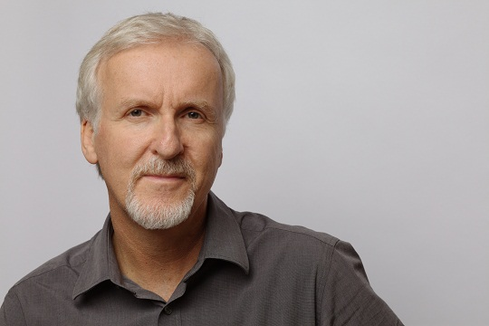

James Cameron
Biografía
Nació el 16 de agosto de 1954 en Kapuskasing (Ontario), un pequeño pueblo canadiense.
Hijo de un ingeniero en electrónica y de una madre artista, la familia cruzó la frontera para vivir al lado de las cataratas del Niágara y posteriormente en la ciudad de Nueva York.
Se traslada a California y cursa estudios de Física en la Universidad de Fullerton mientras trabaja de conductor de camiones.
En 1978 realiza un corto en 35mm en el que realiza todas las funciones del equipo técnico. Fue director artístico en "Los siete magníficos del espacio" de Jim T. Murakami (1980) y ayudante de vestuario en "Happy Birthday,Gemini" de Richard Benner (1980), participó en "1997: Rescate en Nueva York" de John Carpenter donde fue técnico de efectos especiales y director de fotografía. Coescribe los guiones de Rambo y Aliens y en 1981 debutó como realizador en la coproducción ítalo-estadounidense "Piraña 2".
Estrenó en 1984 Terminator, consiguiendo 74 millones de dólares de beneficios. Se casó con su protagonista, Linda Hamilton y el film le valió además fama internacional a su co-protagonista, Arnold Schwarzenegger. Este éxito le permite dirigir Aliens, cuyo guión ya estaba terminado. Tras el tremendo éxito de estos dos largometrajes, dirige Abyss y Terminator 2, con las que gana sendos oscars a los mejores efectos especiales, realizados con animaciones por ordenador hasta entonces nunca vistas.
Crea la compañía Digital Domain con la que realiza Mentiras Arriesgadas y comienza un nuevo proyecto: "Titanic" donde hace confluir la historia ficticia de amor de dos jóvenes, interpretados por Leonardo DiCaprio y Kate Winslet con el trágico y real naufragio del lujoso transatlántico británico. La película consiguió 11 oscars. Originalmente, se proponía abordar la historia del famoso transatlántico, hundido el 16 de abril de 1912 provocando la muerte de 1.500 personas, con un presupuesto de 110 millones de dólares, pero pronto resultó evidente que dicha suma no alcanzaba para tamaña empresa. Debido a que junto a los costos de producción deben invertirse millonarias cifras para promoción y venta, los expertos estiman que "Titanic" requirió un total de 350 millones de dólares. Para evitar contratiempos a causa del clima, la película se filmó en un nuevo estudio en México. Cameron mandó construir dos gigantescos estanques de agua y una copia del Titanic para ser hundida -apenas un diez por ciento más pequeña que el modelo original- a un costo de 12 millones de dólares. Si a esto se le suman los 20 millones que costó la filmación de escenas bajo el agua, los gastos en efectos especiales -calculados en siete millones de dólares- ascendieron en realidad a 30 millones de la misma moneda.
Su película Avatar contó con un presupuesto inicial de más de trescientos millones de dólares y recaudo más de mil seiscientos millones en el primer año de distribución. Se presentó en algunos países el 17 de diciembre de 2009 y en todo el mundo el 18 de ese mismo mes. Se realizó básicamente con la animación generada por computadoras.
El 26 de marzo del 2012, desciende a una profundidad de casi 11 kms en la Fosa de las Marianas en el submarino Deepsea Challenger, en un proyecto personal y en la colaboración con la NASA y National Geographic, donde rueda para unos documentales.
Casado con Sharon Williams de 1978 a 1984; con Gale Anne Hurd de 1985 a 1989; con Kathryn Bigelow de 1989 a 1991; con Linda Hamilton de 1997 a 1999 y con Suzy Amis desde el 2000. Es padre de Josephine, Claire, Quinn y Elizabeth Rose.